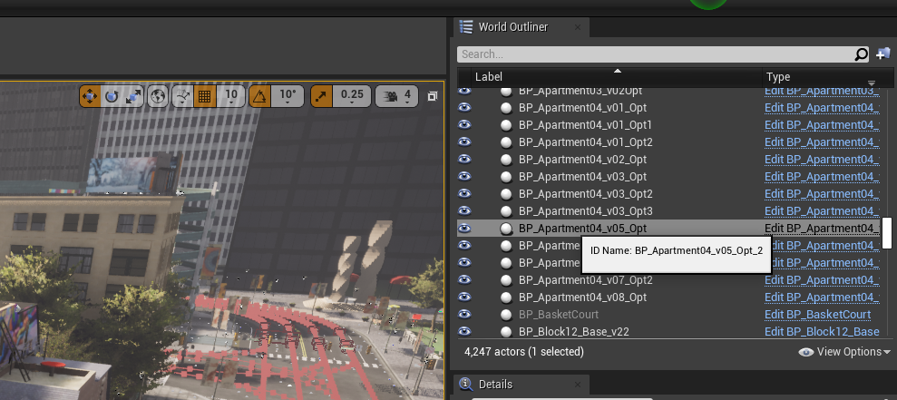
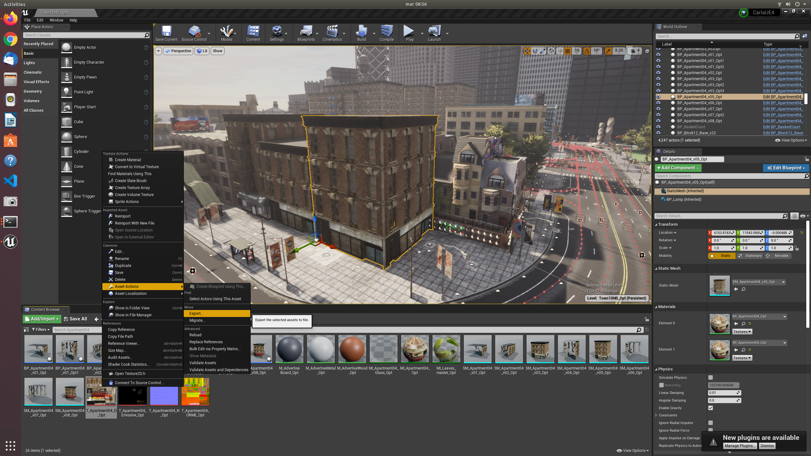
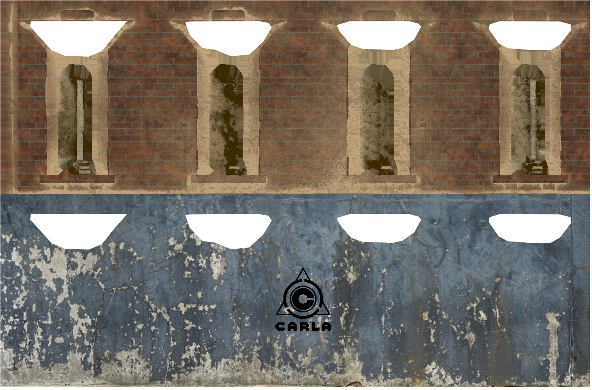

Change textures through the API
The CARLA API can be used to modify asset textures during runtime. In this tutorial, we will learn how to select an asset then modify it's texture while the CARLA simulation is running.
Select an asset in the Unreal Editor
Firstly, we need to load the Unreal Editor and load a CARLA map, follow the instructions for Linux or Windows to build CARLA from source and build and launch the Unreal Editor. Let's open the editor with Town 10 loaded (the default town) and select a building to work with:

We have selected BP_Apartment04_v05_Opt for texture manipulation, the name can be seen in the World Outliner panel. Make sure to hover over the name in the World Outliner and use the name defined in the tooltip. The the internal name may differ from the title displayed in the list. In this case, the internal name is actually BP_Apartment04_v05_Opt_2.

Export a texture to work with
Now that we have selected a building, we can modify the texture used to control the building's appearance. With the building selected, in the details panel you will see some of the details of the asset, such as location, rotation and scale. Click on Static Mesh (inherited) to open the mesh properties, then in the Static Mesh section of the panel click the magnifying glass icon. This brings up the materials and textures belonging to the asset into focus in the Content Browser. In this case, we want to inspect the T_Apartment04_D_Opt texture. If you double click the texture, you can inspect it in the Unreal Editor, however, in this instance we want to export it so we can modify it. Right click and choose Asset Actions > Export. Save the file in an appropriate format (we choose the TGA format here).

Open the exported texture in your preferred image manipulation software and edit the texture as needed. In the image below, the original texture is visible in the top half, the lower half shows the modified texture.

Export your modified texture into an appropriate location and then open up a code editor to run some Python to update the texture in the running CARLA simulation.
Update the texture through the API
If you havent already, launch the CARLA simulation, either from the command line, or launch the simulation within the Unreal Editor. We will use the Python Imaging Library (PIL) to read the texture from the image file we exported from our image manipulation software.
Connect to the simulator
import carla
from PIL import Image
# Connect to client
client = carla.Client('127.0.0.1', 2000)
client.set_timeout(2.0)
Update the texture
After loading the modified image, instantiate a carla.TextureColor object and populate the pixel data from the loaded image.
Use the apply_color_texture_to_object(...) method of the carla.World object to update the texture. You should see the texture update in the UE4 spectator view.
# Load the modified texture
image = Image.open('BP_Apartment04_v05_modified.tga')
height = image.size[1]
width = image.size[0]
# Instantiate a carla.TextureColor object and populate
# the pixels with data from the modified image
texture = carla.TextureColor(width ,height)
for x in range(0,width):
for y in range(0,height):
color = image.getpixel((x,y))
r = int(color[0])
g = int(color[1])
b = int(color[2])
a = 255
texture.set(x, y, carla.Color(r,g,b,a))
# Now apply the texture to the building asset
world.apply_color_texture_to_object('BP_Apartment04_v05_Opt_2', carla.MaterialParameter.Diffuse, texture)

Find object names through the API
To find objects without relying on the Unreal Editor, you can also use world.get_names_of_all_objects() to query object names. By using Python's inbuilt filter(...) method you can zero in on your target object.
# Filter world objects for those with 'Apartment' in the name
list(filter(lambda k: 'Apartment' in k, world.get_names_of_all_objects()))